# Rust Gives You Superpowers ### (Or it can feel that way) <!-- .element class="fragment" --> <br /> Yale Cason III <!----> Note: Trying to keep this talk brief, so I won't dive into details like semantics or syntax, but stay at a high level like why you should give Rust a try, and you might just find something to like
# What is Rust? 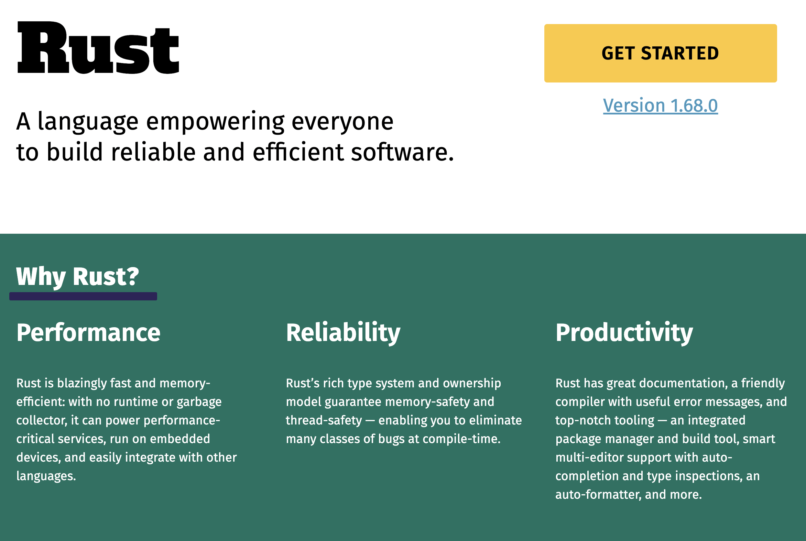 <!-- .element class="fragment" --> <!----> Note: To answer the question of what it is, I'll let their own site answer. Performance, Reliability, & Productivity
# Performance ## It's fast ### (without being an expert) <!-- .element class="fragment" --> <!----> Note: The reason most people come to Rust... They want systems-level performance, and memory safety at the same time ;;; So, why should I care? `XYZ` language is fast enough for me... <!----> Note: The majority of our work is web based, and the majority is written with little concern given to CPU performance We also know better than most that... ;;; ## Time is Money 💸 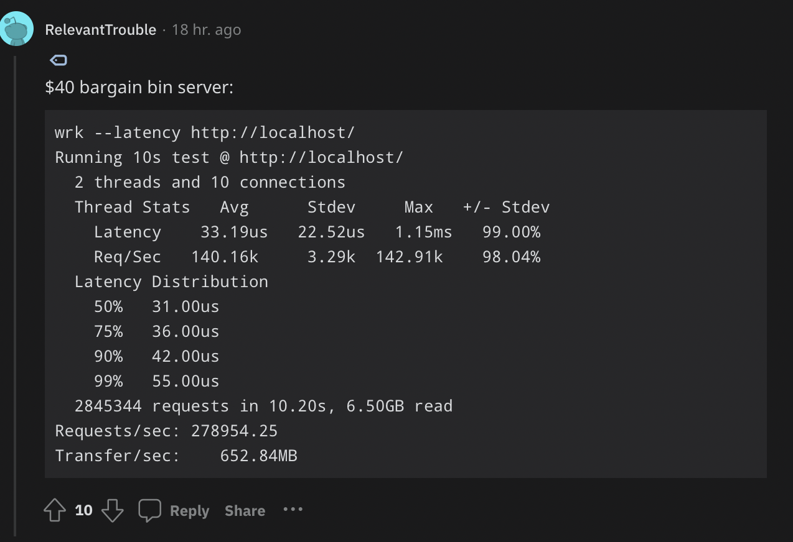 <!----> Note: We see a budget $40/month server hitting > 250k requests per second This directly correlates to smaller EC2 instances, K8s containers, etc. Saving money. ;;; Example: Rewriting an XML parser for a 2+ gig input file: <div class="fragment"> | Language | Time | Peak Memory | | -------- | ----: | ----------: | | Java 11 | 28s | ~ 900MB | | Rust | 8s | ~ 40MB | </div> Theoretical Max with SSD @ 400 MB/s = 5s <!-- .element class="fragment" --> <!----> Note: XML parser optimization needed due to growing size of input files, and growing time to process them. First implementation was a clean slate in Java 11, using StAX (WoodStox) to baseline the theoretical max. Rust implementation was mostly matching 1-to-1 code clone with no further optimization (quick_xml) Theoretical max would be about 5s to just read the whole file from an average SSD ;;; <iframe data-src="https://maxday.github.io/lambda-perf/" class="r-stretch"></iframe> <!----> Note: Lambda Cold start impact There are many times that I've had the same conversation about speeding up the cold start time of a Lambda. Not only do you save boot time, and runtime, but also the development time spent tuning those things. Doesn't Java snapstart fix this? Well, it improves upon it, but it's still losing in cold start performance to dotnet, node and python...
# Reliability & Productivity ## Let the compiler guide you <!----> Note: Okay, so Rust is fast and sips memory, and blah blah blah but isn't it hard to learn and write the code? Is it overkill? ;;; <div class="r-stack"> 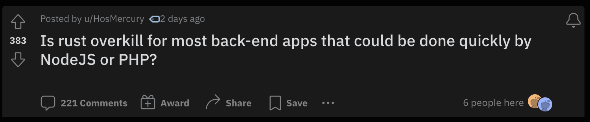 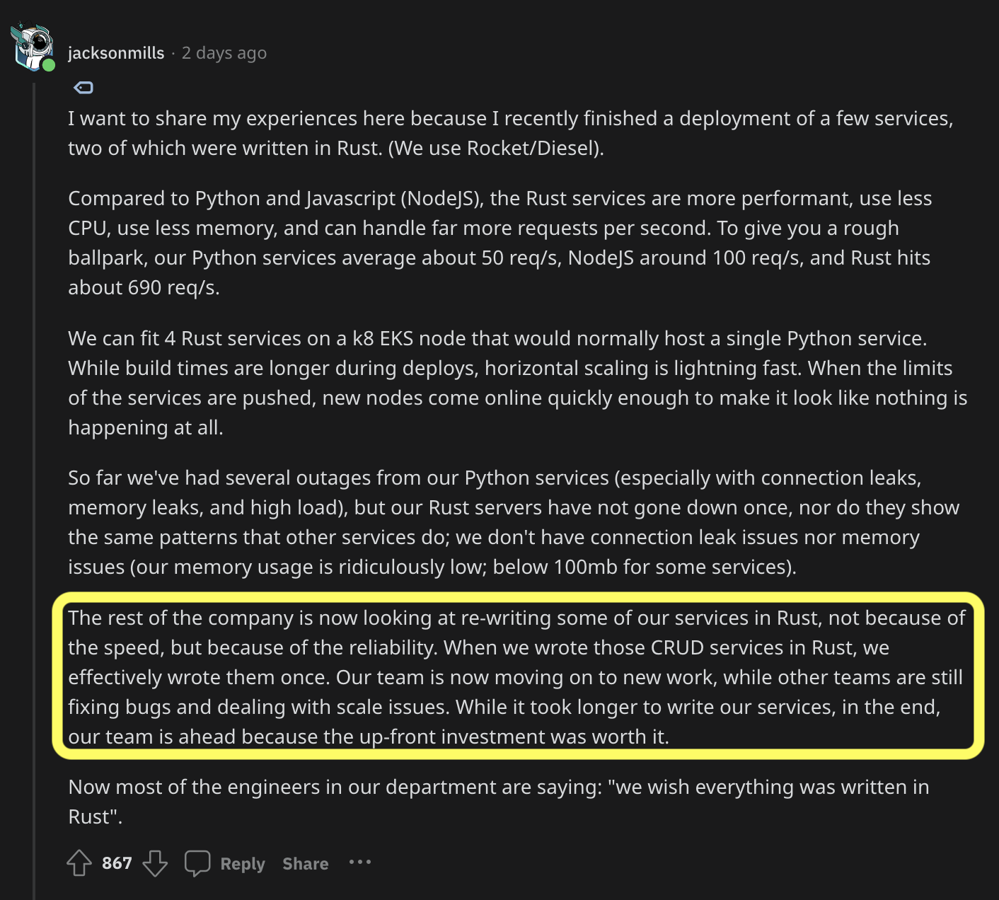 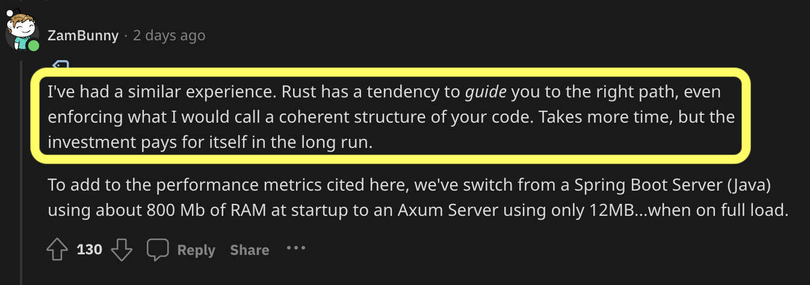 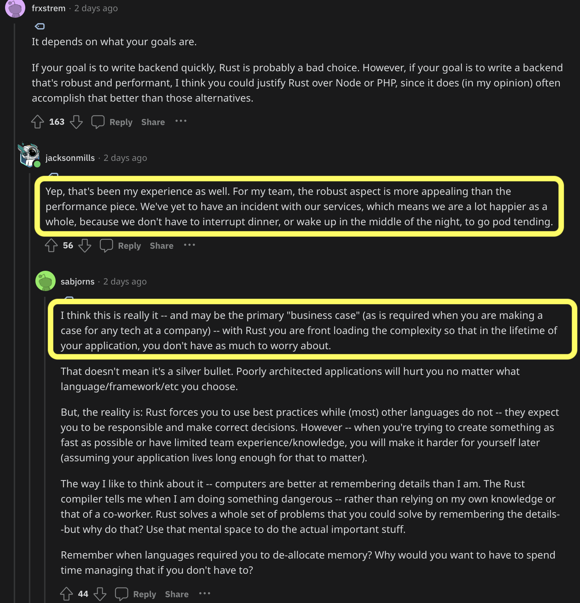 </div> <!----> Note: https://www.reddit.com/r/rust/comments/11uwwhy/is_rust_overkill_for_most_backend_apps_that_could/ ;;; # Reliable Concurrency? <iframe width="700" height="400" src="https://www.youtube-nocookie.com/embed/Dbytx0ivH7Q" class="fragment" allow="accelerometer; autoplay; clipboard-write; encrypted-media; gyroscope; picture-in-picture; web-share" allowfullscreen></iframe> <!----> Note: Didn't the website mention reliable concurrency? I'm just going to totally rip off this fabulous talk that you should all watch: https://www.youtube.com/watch?v=Dbytx0ivH7Q ;;; 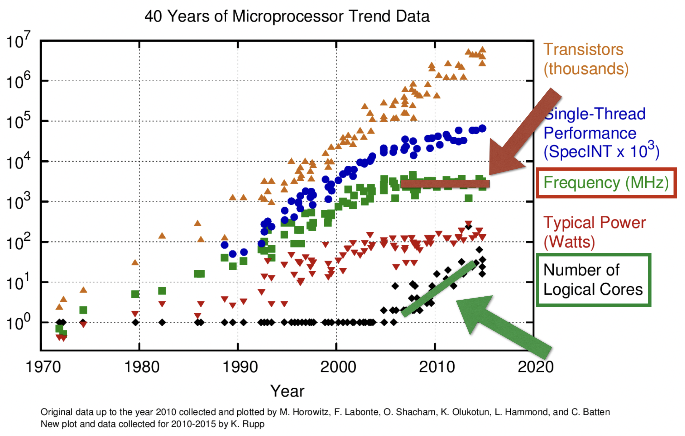 <!----> Note: So, why should we want concurrency? Simply put, processors' single threaded performance, and clock speeds have hit a wall. At the same time, chip manufacturers have added more and more cores for us to use. ;;; 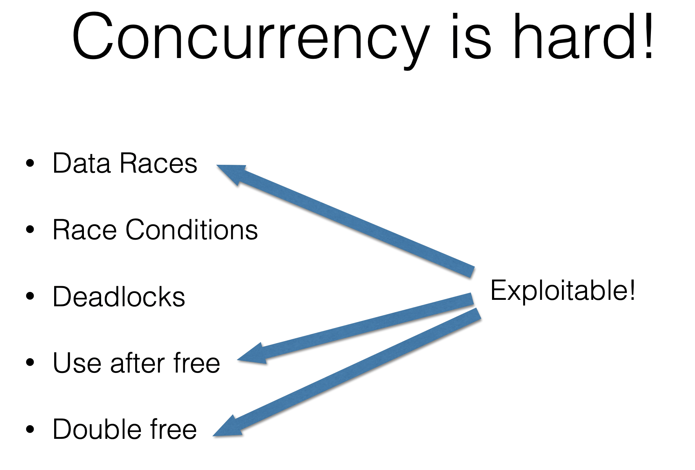 <!----> Note: So, we'll do more computation concurrently to get around the issue. Unfortunately, that's hard to get right in most languages. And potentially exploitable in the typical low level language. ;;; 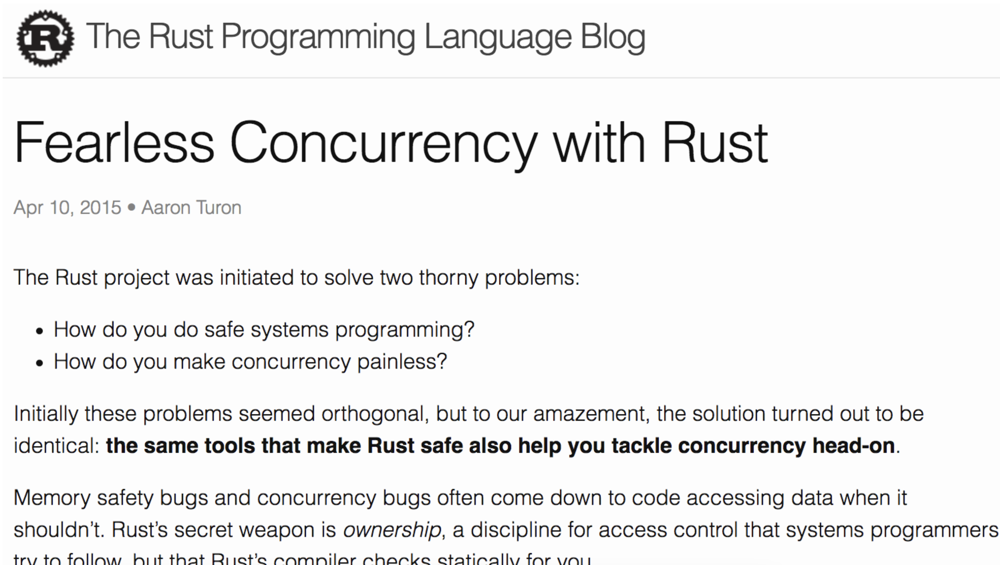 <!----> Note: Fortunately, Rust has some approaches that make things more manageable for us humans. The compiler can support us in parallelism and async concurrency usecases with clever tooling. Again, I recommend watching the full talk.
# Bonus section ## More power! ;;; ## Cross platform support? - 8 Tier 1 (guaranteed to work) - automated build & test - 83 Tier 2 (guaranteed to compile) - automated build - 111 Tier 3 (support in codebase) - no automation ;;; Client-side code in Rust? 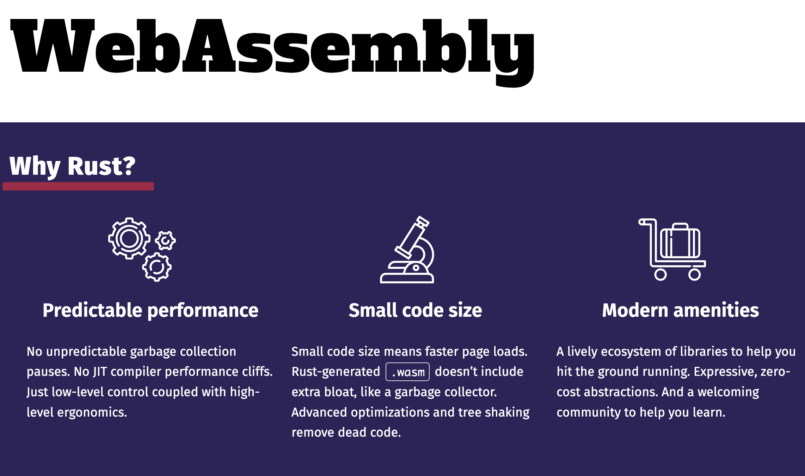 ;;; <iframe data-src="https://rustwasm.github.io/docs/book/" class="r-stretch"></iframe> ;;; Search your computer quickly? <div class="r-stack"> 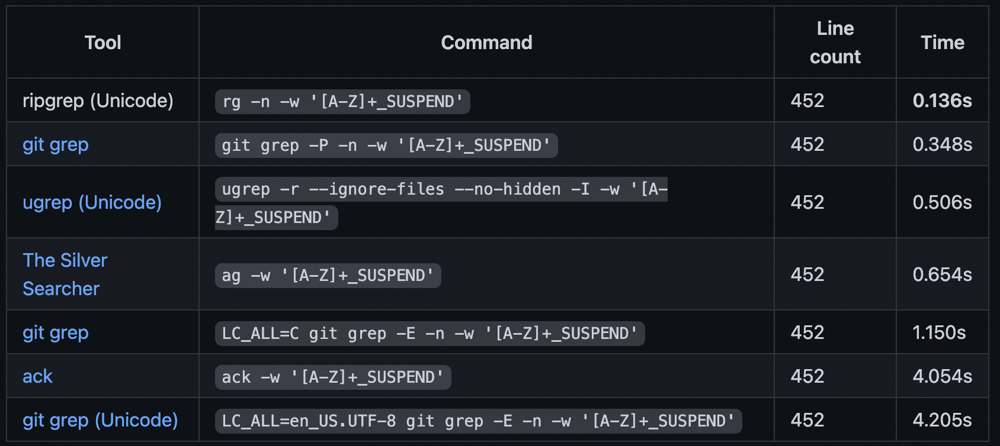 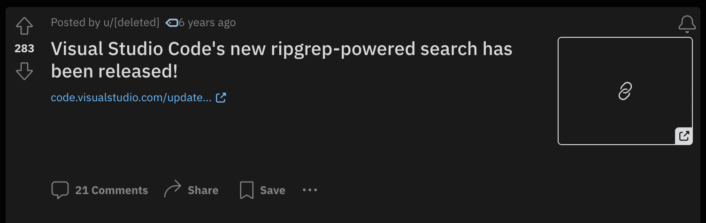 </div> <!----> Note: (You've actually been using this the past 6 years... as of 2023) ;;; Write an OS in Rust? <iframe data-src="https://os.phil-opp.com/" class="r-stretch"></iframe> ;;; NodeJs integration? <iframe data-src="https://neon-bindings.com/" class="r-stretch"></iframe> ;;; Python integration? https://github.com/PyO3/pyo3 & https://github.com/PyO3/maturin ;;; PostgreSQL Plugin? <iframe data-src="https://kaiwern.com/posts/2022/07/20/writing-postgresql-extension-in-rust-with-pgx/" class="r-stretch"></iframe> ;;; https://github.com/rust-unofficial/awesome-rust <!----> Note: And if all that wasn't enough, here's a big old list. I'm not saying Rust is uniquely awesome, or even always the right choice, but it's compelling to me, and I think you should give it a chance. Thanks!